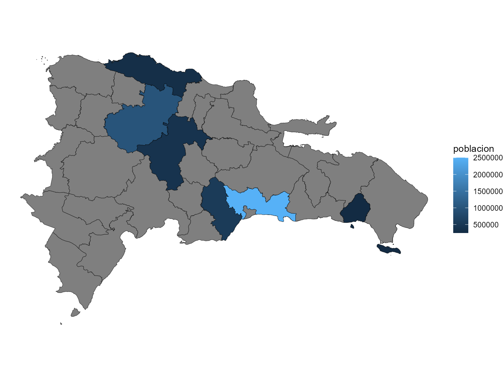
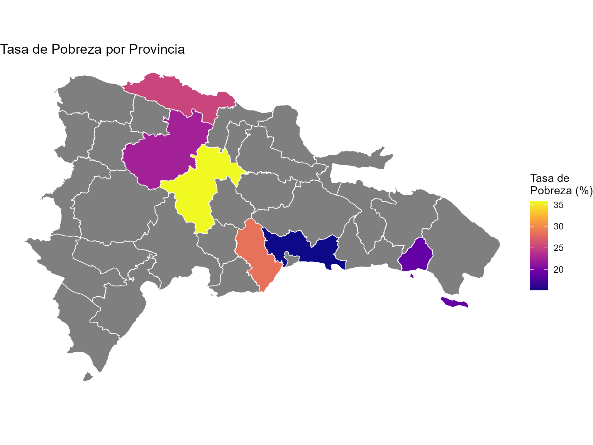
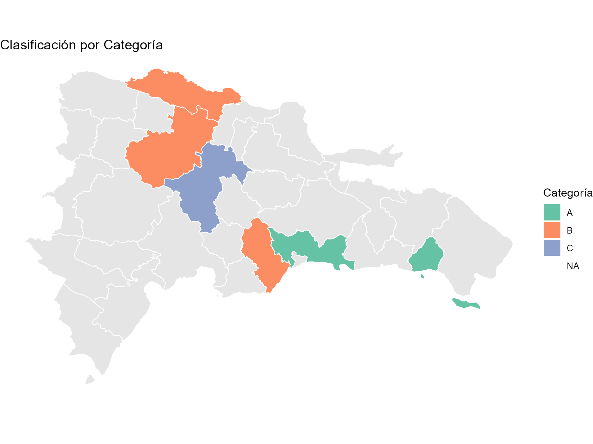
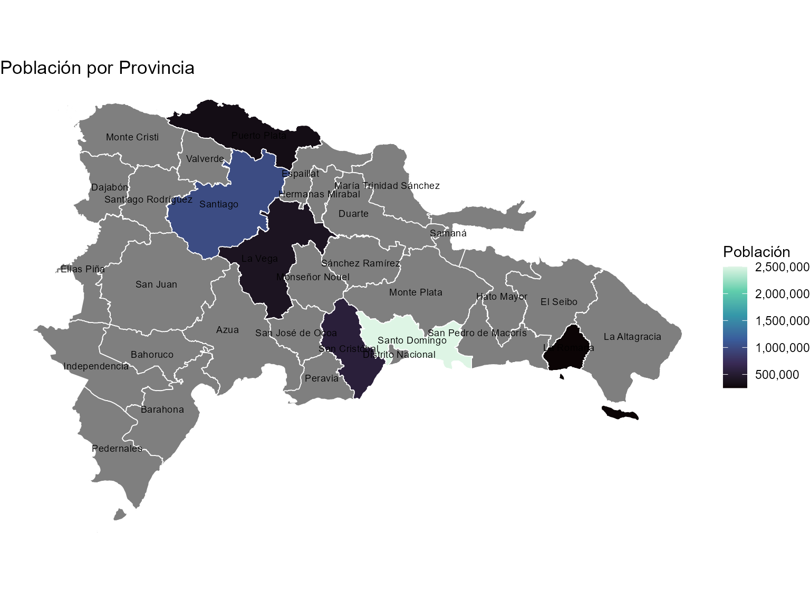
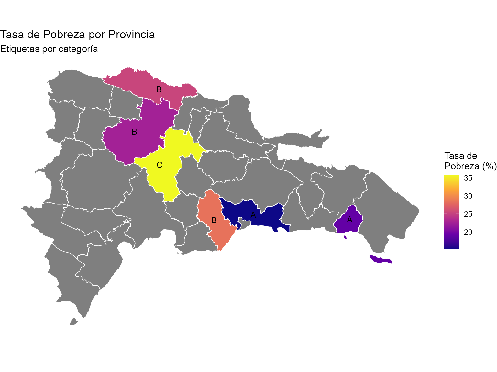
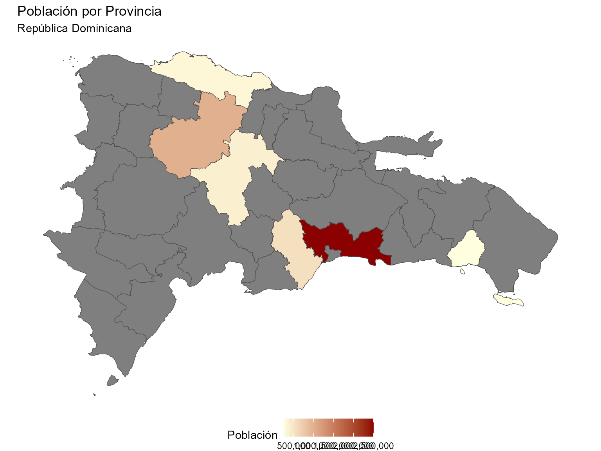
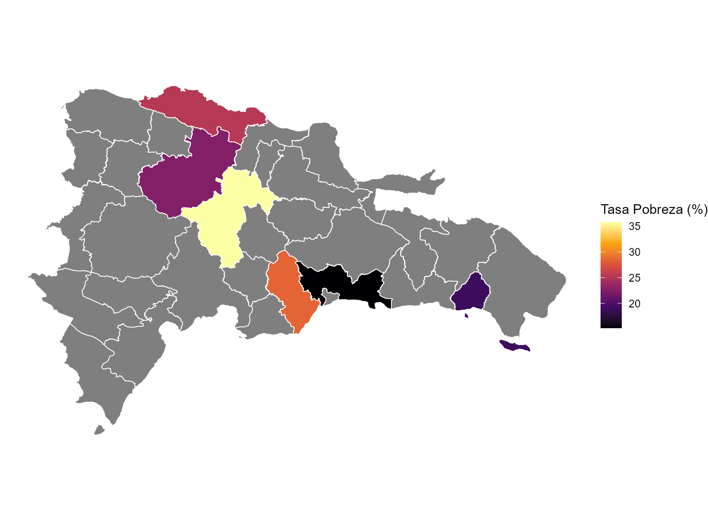

Funciones de Mapeo en geodomR
geodomR
mapeo.RmdIntroducción
El paquete geodom permite crear mapas coropléticos de
República Dominicana con el mínimo esfuerzo. Solo necesitas un data
frame con nombres geográficos y geodom se encarga del
resto: detecta el nivel administrativo, selecciona la variable de
relleno y une tus datos con las geometrías.
Datos de Ejemplo
datos_provincias <- data.frame(
provincia = c(
"Santo Domingo", "Santiago", "La Vega",
"San Cristóbal", "La Romana", "Puerto Plata"
),
poblacion = c(2500000, 1000000, 400000, 550000, 250000, 320000),
tasa_pobreza = c(15.2, 22.5, 35.8, 28.4, 18.9, 25.3),
categoria = c("A", "B", "C", "B", "A", "B")
)
datos_provincias
#> provincia poblacion tasa_pobreza categoria
#> 1 Santo Domingo 2500000 15.2 A
#> 2 Santiago 1000000 22.5 B
#> 3 La Vega 400000 35.8 C
#> 4 San Cristóbal 550000 28.4 B
#> 5 La Romana 250000 18.9 A
#> 6 Puerto Plata 320000 25.3 BCrear un Mapa con gd_map()
Una sola línea. Sin especificar nivel geográfico, sin indicar qué variable usar para el color, sin cargar geometrías:
gd_map(datos_provincias)
Personalizar el mapa
Puedes especificar la variable de relleno y parámetros de estilo:
gd_map(datos_provincias, fill = "tasa_pobreza", color = "white", linewidth = 0.3) +
scale_fill_viridis_c(option = "plasma", name = "Tasa de\nPobreza (%)") +
labs(title = "Tasa de Pobreza por Provincia")
Cuando no especificas fill, geodom usa
internamente gd_detect_fill() que selecciona la variable
más informativa (mayor coeficiente de variación para numéricas, mayor
entropía de Shannon para categóricas). De igual forma,
gd_detect_level() examina los nombres de tus columnas y
valores para determinar si son provincias, municipios, regiones,
etc.
Variables categóricas
gd_map(datos_provincias, fill = "categoria", color = "white", linewidth = 0.3) +
scale_fill_brewer(palette = "Set2", name = "Categoría") +
labs(title = "Clasificación por Categoría")
Agregar Etiquetas
Para agregar etiquetas al mapa, usa el argumento
labels:
gd_map(datos_provincias, fill = "poblacion", labels = TRUE,
color = "white", linewidth = 0.3) +
scale_fill_viridis_c(option = "mako", labels = scales::comma, name = "Población") +
labs(title = "Población por Provincia")
labels = TRUE muestra el nombre canónico de cada unidad
geográfica. También puedes especificar una columna de tus datos:
gd_map(datos_provincias, fill = "tasa_pobreza", labels = "categoria",
color = "white", linewidth = 0.3, label_size = 3.5) +
scale_fill_viridis_c(option = "plasma", name = "Tasa de\nPobreza (%)") +
labs(title = "Tasa de Pobreza por Provincia",
subtitle = "Etiquetas por categoría")
Personalización Avanzada con gd_ggplot() y
gd_geom_sf()
Para mayor control, puedes construir el mapa paso a paso.
gd_ggplot() prepara un ggplot con los datos ya unidos a
geometrías, y gd_geom_sf() crea capas que aceptan datos
crudos directamente:
gd_ggplot(datos_provincias, fill = "poblacion") +
gd_geom_sf(color = "gray30", linewidth = 0.2) +
scale_fill_gradient(
low = "lightyellow", high = "darkred",
labels = scales::comma, name = "Población"
) +
labs(
title = "Población por Provincia",
subtitle = "República Dominicana"
) +
theme_void() +
theme(legend.position = "bottom")
gd_geom_sf() también puede recibir datos nuevos
directamente como capa adicional sobre un ggplot existente:
ggplot() +
gd_geom_sf(data = datos_provincias, fill = "tasa_pobreza",
color = "white", linewidth = 0.3) +
scale_fill_viridis_c(option = "inferno", name = "Tasa Pobreza (%)") +
theme_void()
Resumen (Mapeo)
| Función | Uso |
|---|---|
gd_map() |
Crear mapa coroplético completo (con labels opcionales) |
gd_map_data() |
Preparar datos unidos a geometrías |
gd_ggplot() |
Inicializar ggplot con datos geográficos |
gd_geom_sf() |
Capa geom_sf con autodetección |
gd_detect_level() |
Detectar nivel geográfico |
gd_detect_fill() |
Detectar mejor variable para fill |
Nota
Para temas transversales del paquete (jerarquía administrativa, limpieza de nombres, datasets y caché), ver la viñeta general con:
vignette("general", package = "geodom")